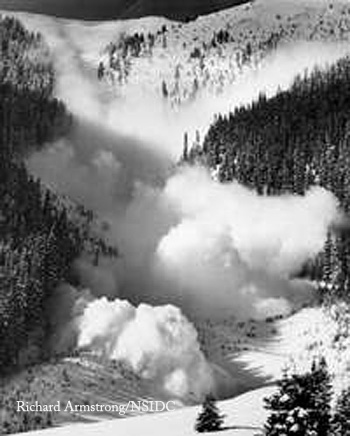

Mapping Utah Avalanches |
 Avalanches happen. And if you travel in the backcountry, they may happen to you. And with more and more people traveling deeper and deeper into the backcountry, I wanted to look deeper into avalanche occurrences and the associated dangers posed to humans. I was originally interested in juxtaposing avalanche variables, like slide frequency and path size, etc, to human injury or fatality across the state of Utah. But, due to the lack of publicly available data on the subject, I will be focusing on an area southeast of Salt Lake City in the Wasatch Range. And unfortunately, I will be focusing on avalanche variables alone because I have been unable to collect enough associated injury and fatality data for study area. |
Page Created by Patrick Gorman, Last Updated 1.6.14 |